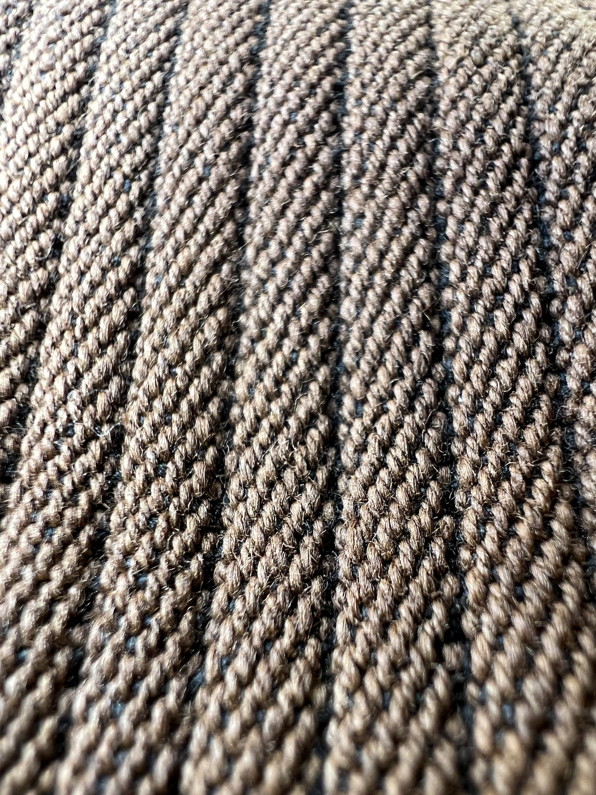
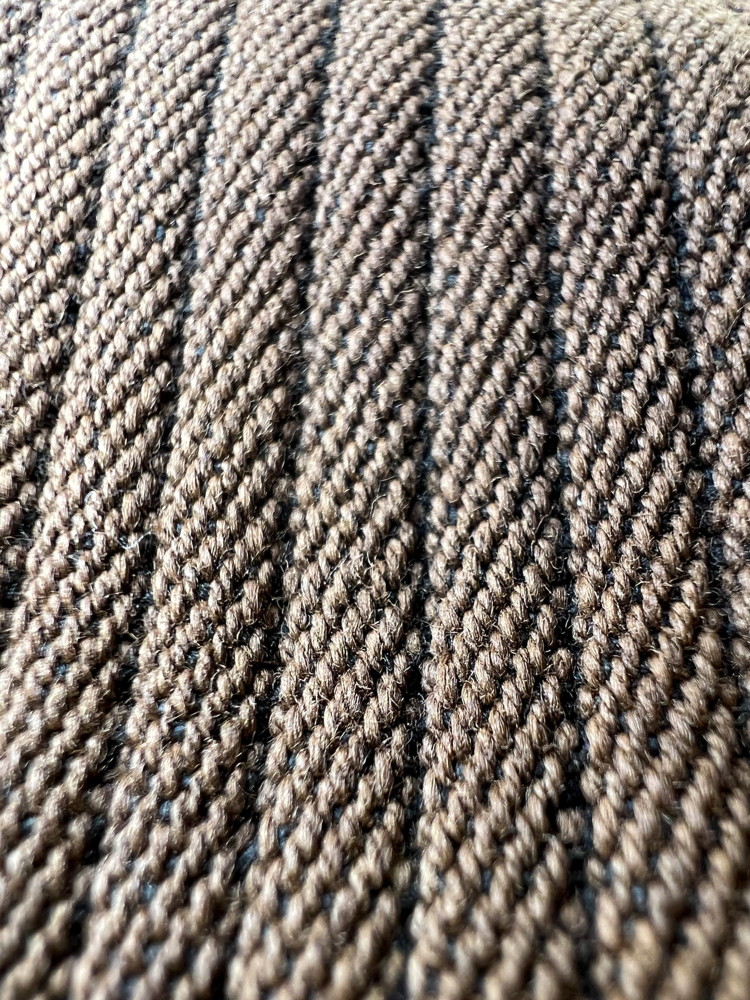

-French Hunting Jacket-
このジャケットはフランスの1930年代のハンティングジャケットになります。
ハンティングジャケットとは、その名前の通り"ハンティング(hunting)"=狩猟を目的として作られたアイテムです。
大きな特徴としては背中にゲームポケットという大きなポケットが付いています。このポケットは狩猟したあとの動物(ウサギやトリ)を収納するそうです。
他には動物ボタンと呼ばれているボタンがあり、このボタンはハンティングをする動物をモチーフにしているので、様々な種類があります。
この時代の狩猟は、主に富裕層（階級のある人）の競技だったそうです。なので、このような細かいところまでしっかりと作りこまれています。


 
